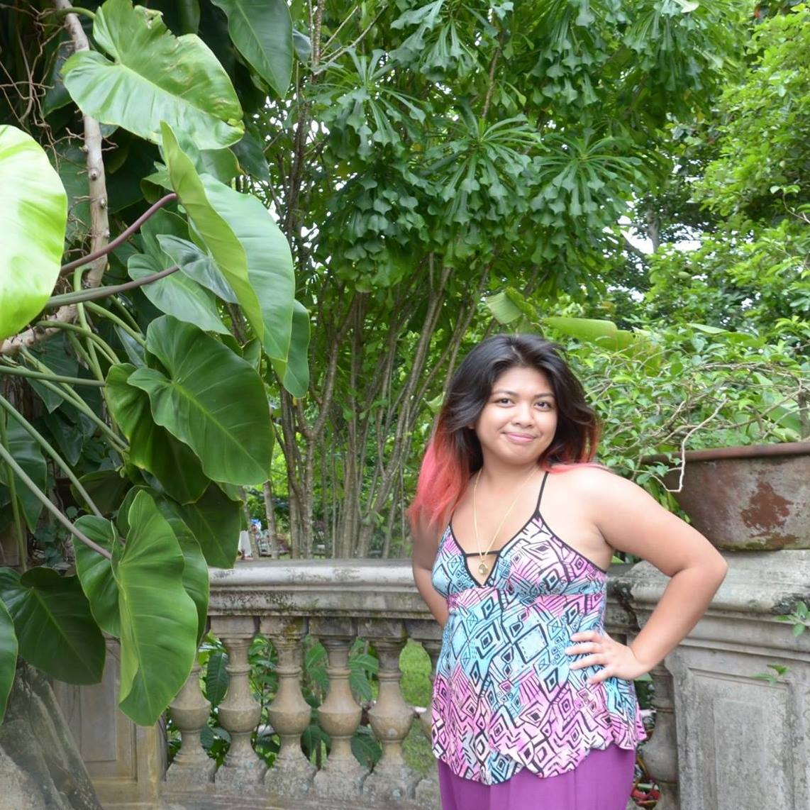

About Me: Franchette Zamudio

My Professional Links:
Biography:
My full legal name is Franchette Beatrix RJ O. Zamudio. I know, it can be a mouthful. So I usually go by "RJ," partly for the intrigue but also to add an element of surprise when people find out my actual full name. I was born and raised in Metro Manila, Philippines until I was eight years old, then moved to live in Jeddah, Saudi Arabia for five years, then finally settled down with my mom in New York City at the age of thirteen.
I like to summarize myself in "Four F's": Filipino. Feminist. Figure Skater. Filmmaker.
Well, maybe still working on that last F. This past summer 2016, I went on my first journey alone to produce, direct, transcribe, and edit my first documentary regarding the issues faced by the local folk in a small town which my grandfather runs in the rural Philippines. My dream is to someday finish it. As I have been talking with people about my project, everyone has strongly suggested me to create a fundraising page/link where I can showcase all my promotional footage and mission. So I figured that I could take that one first baby step by taking this Web Fundamentals course at Eugene Lang College.
This first trip I took alone, and just getting to deeply know the town opened my eyes into what I would possibly want to do with my career. I was inspired to declare my double major in Journalism + Design and Screen Studies because of this. I found that being able to share important stories to the general public is what I would love to do in my life.